กายภาพบำบัดสำหรับผู้ป่วย COPD
(โรคปอดอุดกั้นเรื้อรัง)
แนวทางดูแลปอด ฝึกหายใจ ออกกำลังกาย และจัดท่าพักลดเหนื่อย
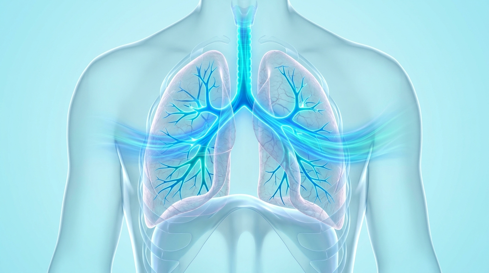
1. การฝึกการหายใจ (Breathing Exercises)
เทคนิคสำคัญในการควบคุมลมหายใจ เพิ่มออกซิเจน และลดอาการหอบเหนื่อย
- • หายใจเข้าทางจมูก: นับช้า ๆ 2 วินาที (สูดเข้าเต็มที่)
- • เม้มปากแล้วหายใจออกช้า ๆ: ประมาณ 4 วินาที (เหมือนเป่าเทียนเบา ๆ)
- • ประโยชน์: ช่วยลดอาการหอบ และป้องกันทางเดินหายใจยุบตัว
- • วางมือบนหน้าท้องเพื่อรับรู้การเคลื่อนไหว
- • หายใจเข้าท้องป่อง | หายใจออกท้องแฟบ
- • ประโยชน์: ลดการใช้กล้ามเนื้อคอและไหล่ในการดึงหายใจ
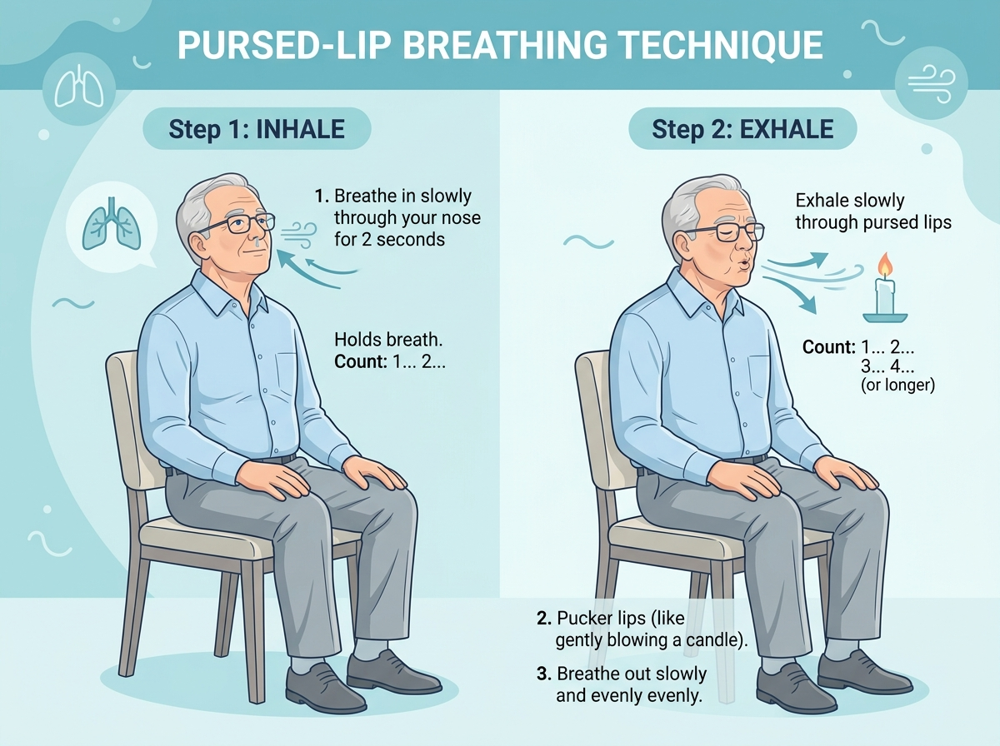
2. การระบายเสมหะ (Airway Clearance Techniques)
หากมีเสมหะมาก ควรเลือกใช้เทคนิคที่เหมาะสมเพื่อขับเสมหะออกโดยไม่เหนื่อยล้า
• ขยายทรวงอก: สูดเข้าลึกค้างไว้ 2–3 วินาทีแล้วผ่อนออก
• ขับเสมหะ (Huffing): เปล่งเสียงฮัฟดันเสมหะขึ้นมา
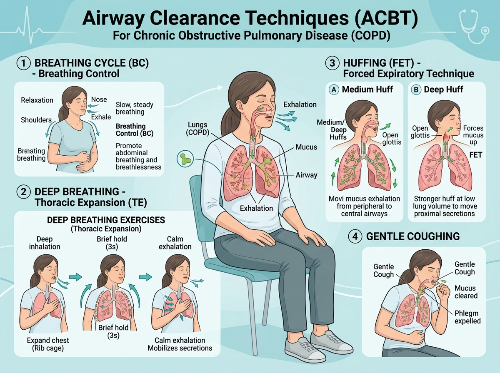
3. การออกกำลังกายแบบแอโรบิก (Aerobic Exercise)
ควรทำอย่างสม่ำเสมอ เพื่อพัฒนาสมรรถภาพปอดและกล้ามเนื้อโดยรวม
- • การเดิน (Walking): บนพื้นราบ เดินก้าวสม่ำเสมอ กำหนดลมหายใจ
- • ปั่นจักรยานอยู่กับที่ (Stationary Cycling): ปลอดภัย ลดแรงกระแทกข้อเข่า
- • ออกกำลังกายแขนและขา: แกว่งแขน ย่ำเท้าอยู่กับที่
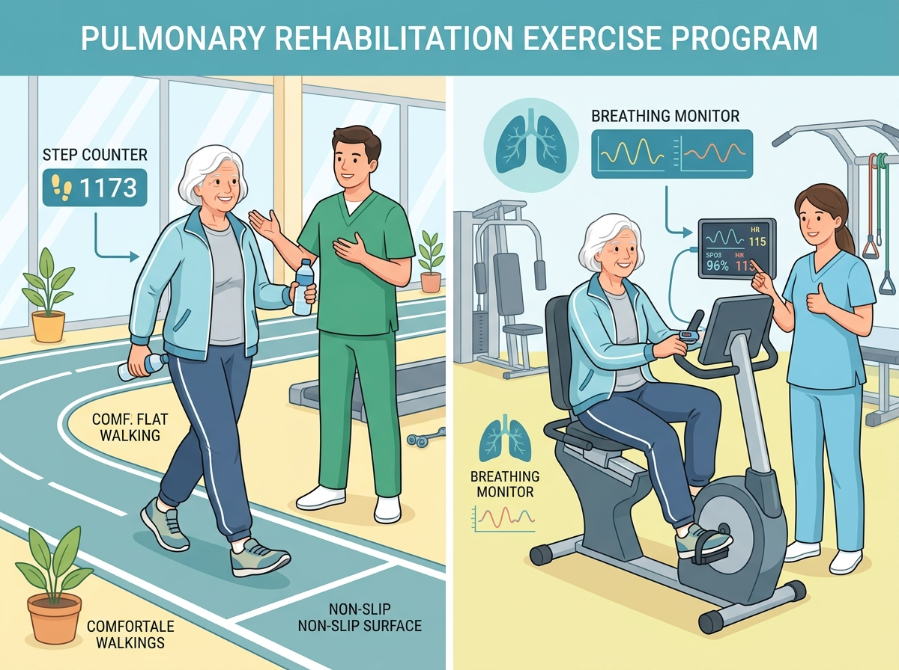
4. การฝึกกล้ามเนื้อ & 5. การฝึกความทนทาน
เพิ่มความแข็งแรงของกล้ามเนื้อมัดใหญ่ เพื่อให้ทำกิจกรรมในชีวิตประจำวันได้ไม่เหนื่อยง่าย
• ช่วยให้ร่างกายใช้ออกซิเจนได้อย่างมีประสิทธิภาพมากขึ้น
• ลดอาการเหนื่อยสะสม ทำกิจกรรมต่อเนื่องได้ดีขึ้น
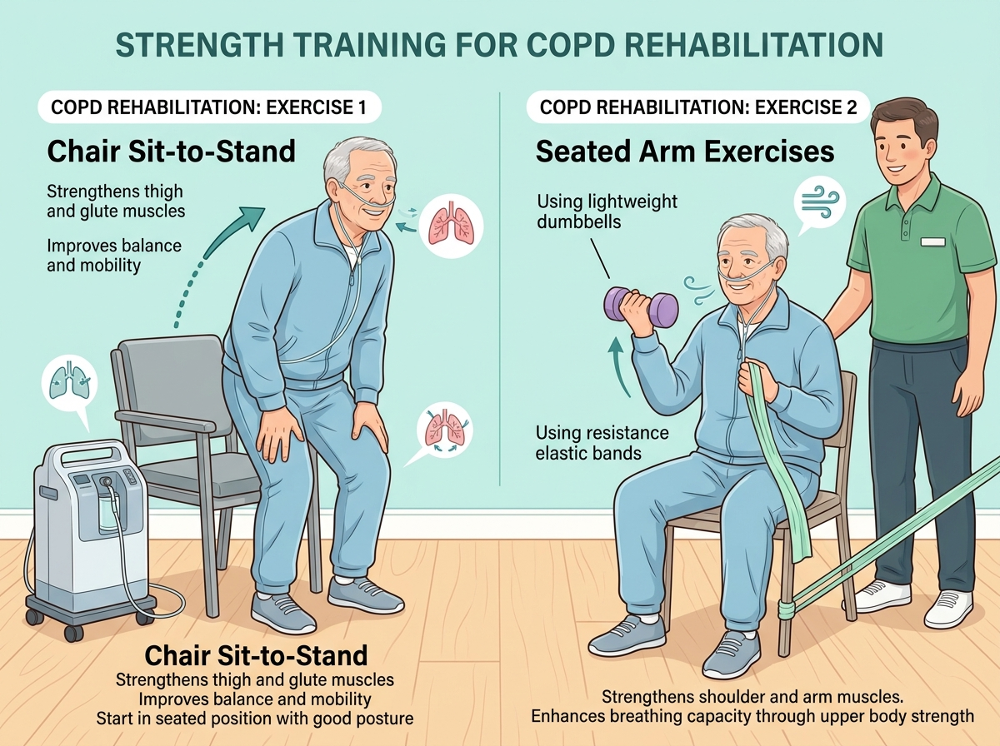
ควรหยุดออกกำลังกายและพบแพทย์หากมีอาการ
หากพบสัญญาณเตือนเหล่านี้ ให้หยุดพักทันที และประเมินอาการอย่างใกล้ชิด
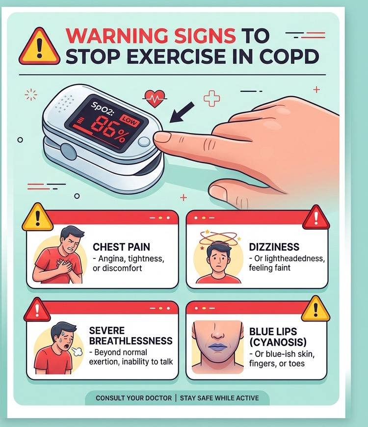
เทคนิคการไอที่ถูกต้องเพื่อขับเสมหะ
ช่วยขับเสมหะได้ง่ายขึ้น ลดความเหนื่อยล้า และลดการระคายเคืองทางเดินหายใจ
4. เกร็งหน้าท้อง ➔ 5. ไอแรง ๆ 2 ครั้งติดกัน (ครั้ง 1 หลุด, ครั้ง 2 ขับออก) ➔ 6. บ้วนทิ้ง
⚠️ ข้อควรระวัง: ไม่ควรไอติดต่อกันหลายครั้งจนเวียนหัว
✨ ข้อดี: เหนื่อยน้อย หลอดลมไม่ตีบ ไล่เสมหะจากปอดลึกได้ดี
• หรือเอนพนัก 45–90 องศา
• เพื่อให้กระบังลมและปอดขยายเต็มที่
• สังเกตหน้าท้องป่องขยาย (ท้องป่อง)
• ให้อากาศเข้าไปอยู่หลังก้อนเสมหะ
• ให้อากาศกระจายทั่วถุงลมในปอด
• สร้างแรงดันในช่องอกเตรียมพร้อมไอ
• อาจใช้มือหรือหมอนช่วยประคองหน้าท้อง
• ช่วยเพิ่มพลังดันเสมหะพุ่งขึ้นมา
• ครั้งที่ 2: ไอซ้ำทันทีขับเสมหะขึ้นคอ
• ขับเสมหะได้หมด ไม่ต้องเค้นไอซ้ำ
• พับมิดชิดทิ้งถังขยะ และล้างมือทุกครั้ง
• นั่งพัก หายใจผ่อนคลายสบาย ๆ
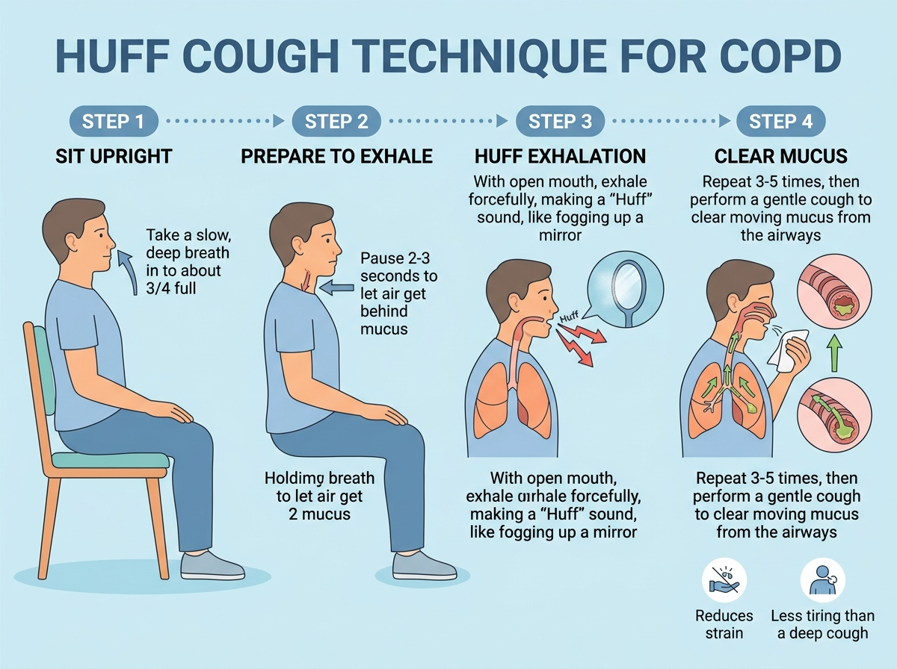
1. การจัดท่านั่งเพื่อลดอาการเหนื่อย
ช่วยให้กระบังลมทำงานมีประสิทธิภาพสูงสุด ลดการใช้พลังงานและกล้ามเนื้อคอ-ไหล่
- • นั่งบนเก้าอี้ เท้าวางราบกับพื้นอย่างมั่นคง
- • โน้มตัวไปข้างหน้าเล็กน้อย (ประมาณ 15 – 30 องศา)
- • วางข้อศอกบนต้นขา หรือวางข้อศอกบนโต๊ะข้างหน้า
- • ปล่อยหัวไหล่และคอให้ผ่อนคลาย ไม่ยกไหล่เกร็ง
- • หายใจแบบเม้มปาก (Pursed-lip) ควบคู่ไปด้วย
• พักกล้ามเนื้อคอและไหล่ ลดการใช้แรงดึงหายใจ
• บรรเทาอาการหอบเหนื่อยได้อย่างรวดเร็วและปลอดภัย
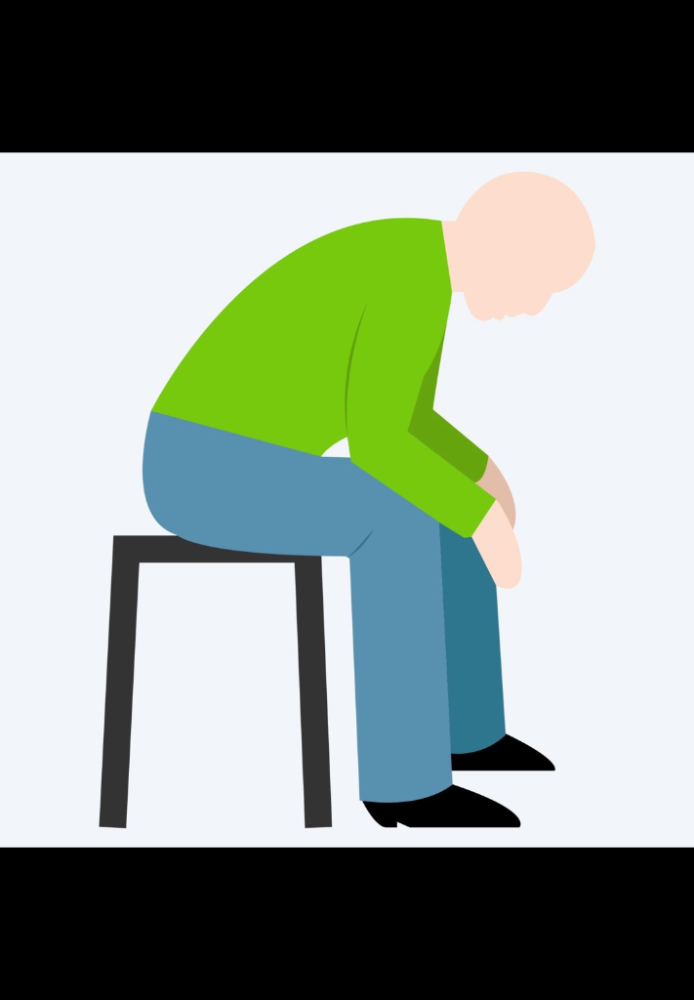
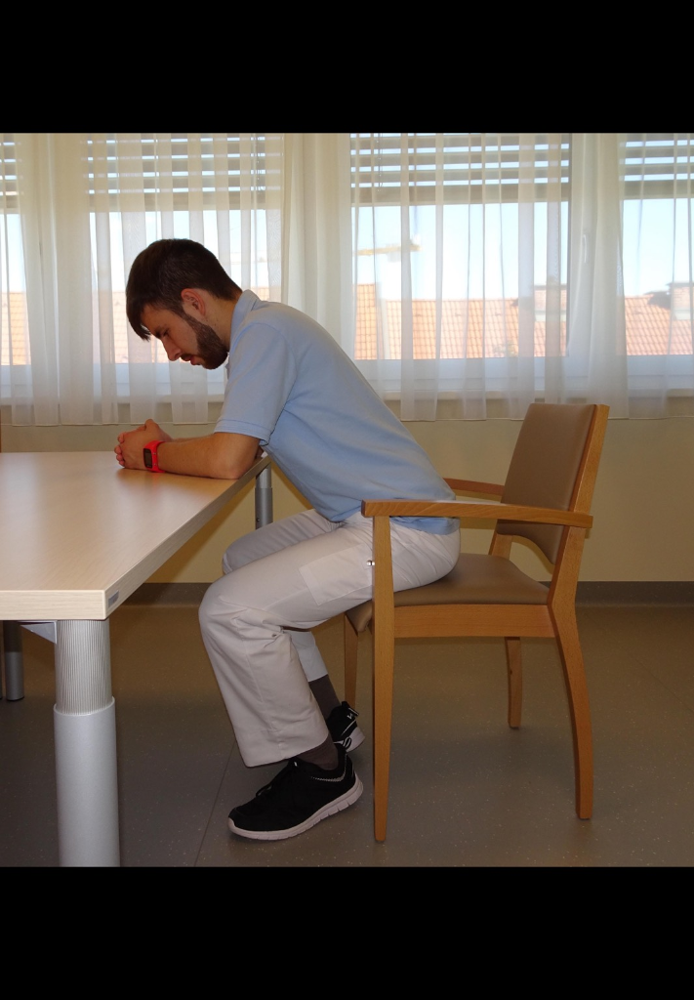
2. นั่งพิงโต๊ะ & 3. นั่งพิงพนักเก้าอี้
การเลือกท่าพักที่เหมาะสมกับระดับความเหนื่อยและสภาพแวดล้อม
• ก้มตัวเล็กน้อย วางแขนและศีรษะพักบนหมอนอย่างสบาย
• ผ่อนคลายกล้ามเนื้อคอและหัวไหล่ หายใจเม้มปากช้า ๆ
• วางแขนบนที่วางแขนหรือหมอนหนุน เท้าวางราบกับพื้น
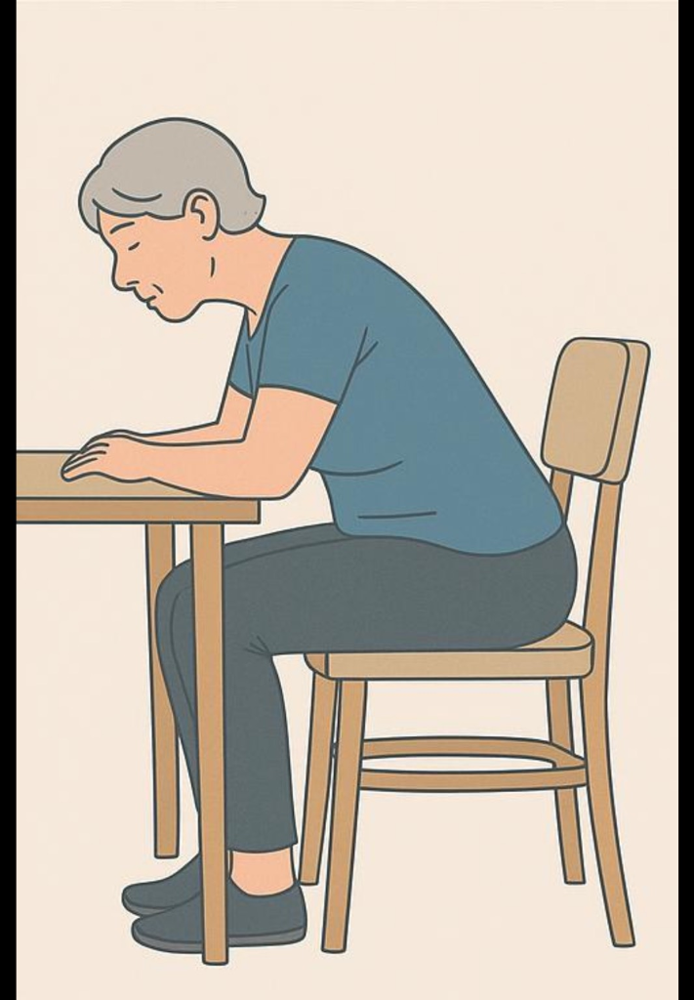
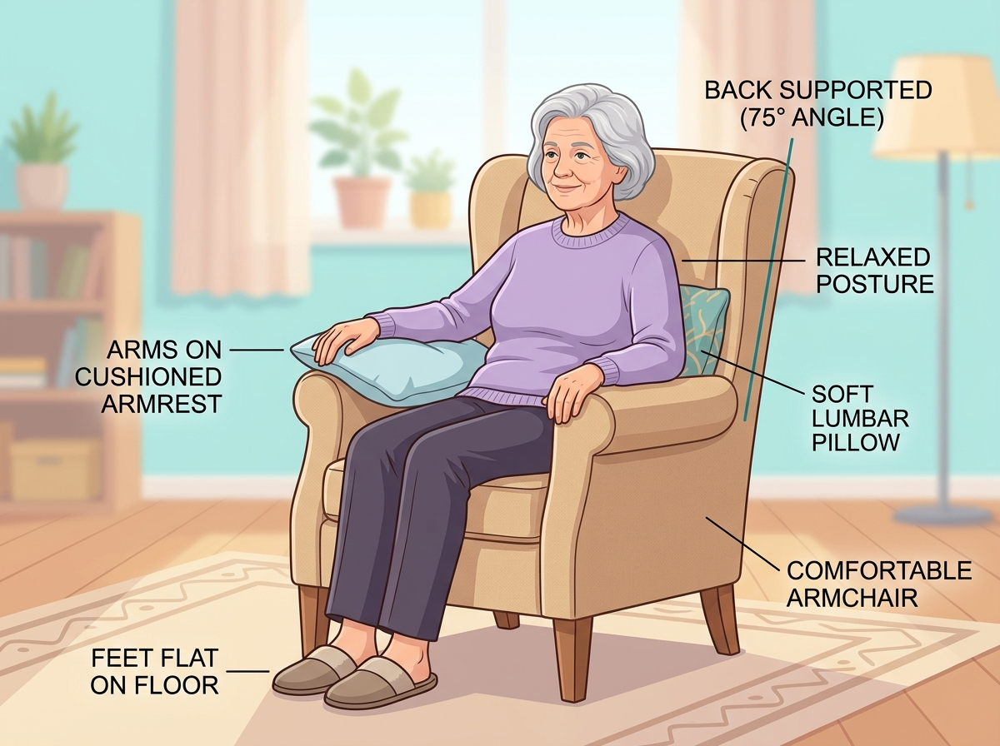
สิ่งที่ควรทำ VS สิ่งที่ควรหลีกเลี่ยง เมื่อเหนื่อยหอบ
ขั้นตอนปฏิบัติอย่างเป็นระบบเพื่อรับมือกับภาวะหอบเหนื่อยอย่างปลอดภัย
2. จัดท่านั่งโน้มตัวลดเหนื่อย (วางมือบนเข่า/ศอกบนโต๊ะ)
3. หายใจเข้าทางจมูก ช้า ๆ (ไม่เกร็งคอ)
4. เม้มปากหายใจออกช้า ๆ ให้ยาวกว่าเข้า (เข้า 2 วิ : ออก 4 วิ)
5. รอจนหายใจสม่ำเสมอ จึงค่อยเริ่มกิจกรรมต่อ
• อย่ายกไหล่หรือเกร็งคอ: ทำให้กล้ามเนื้อช่วยหายใจล้าเร็ว
• อย่ากลั้นหายใจ: ทำให้ความดันในช่องอกสูงขึ้น
• อย่ารีบเดินหรือฝืนทำต่อ: เสี่ยงขาดออกซิเจนและหมดสติ
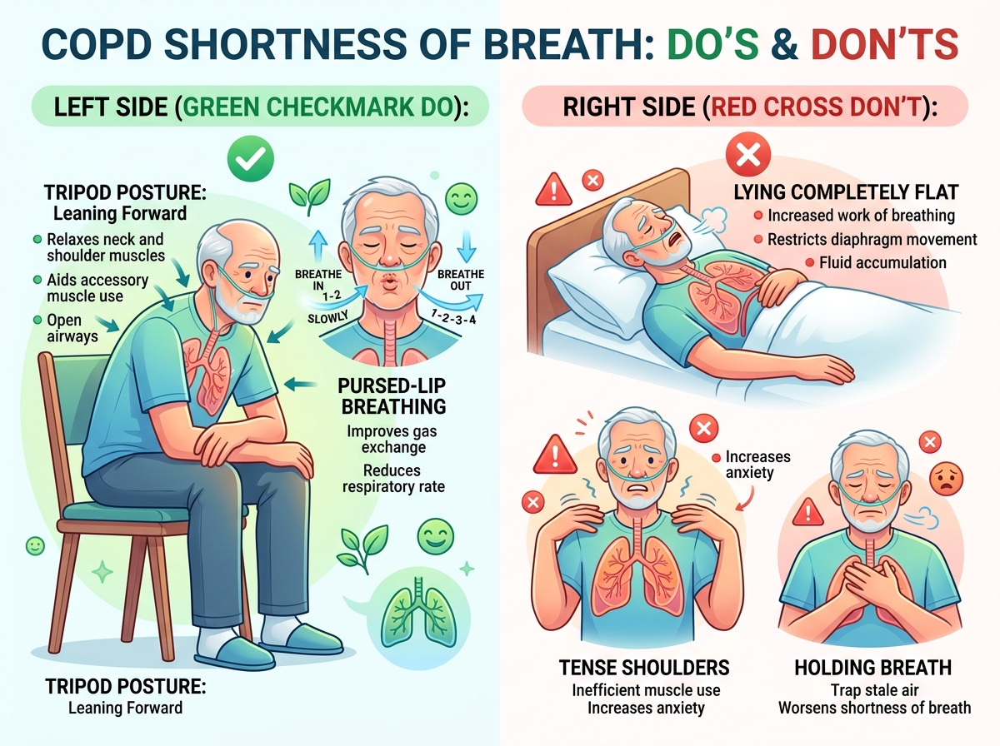
ข้อควรพบแพทย์ทันที (Medical Red Flags)
หากอาการหอบ ไม่ดีขึ้นหลังพักและจัดท่า หรือมีอาการต่อไปนี้ร่วมด้วย
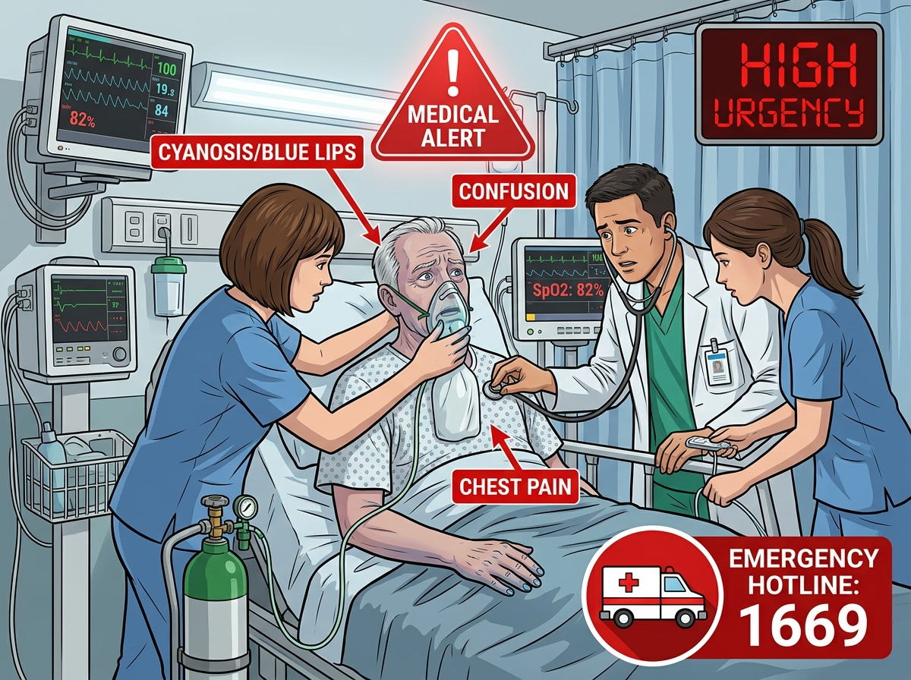
บทสรุป: 5 เสาหลักกายภาพบำบัดในผู้ป่วย COPD
การฝึกฝนอย่างสม่ำเสมอและถูกวิธี ช่วยฟื้นฟูสมรรถภาพปอดได้อย่างยั่งยืน
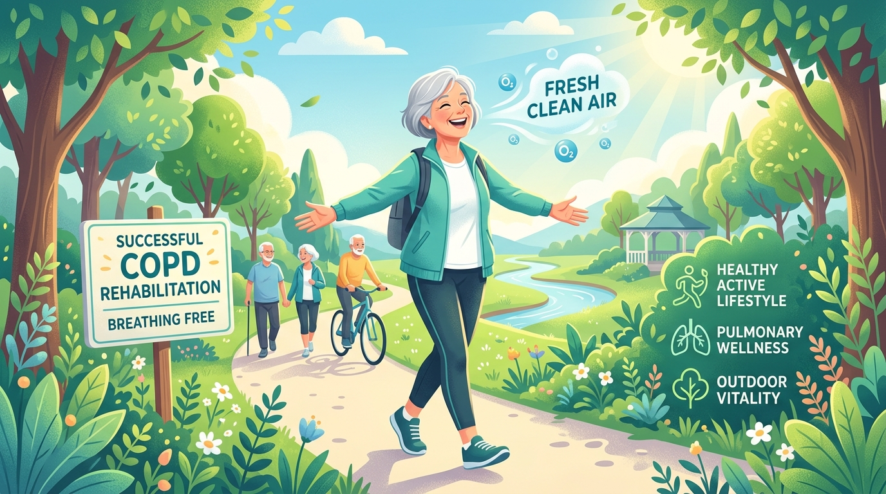